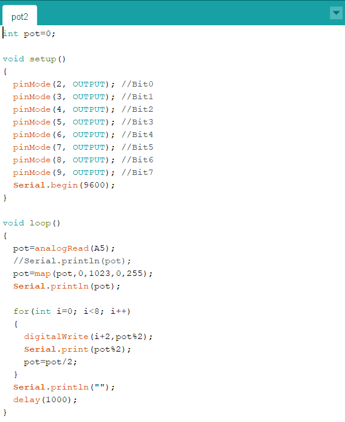
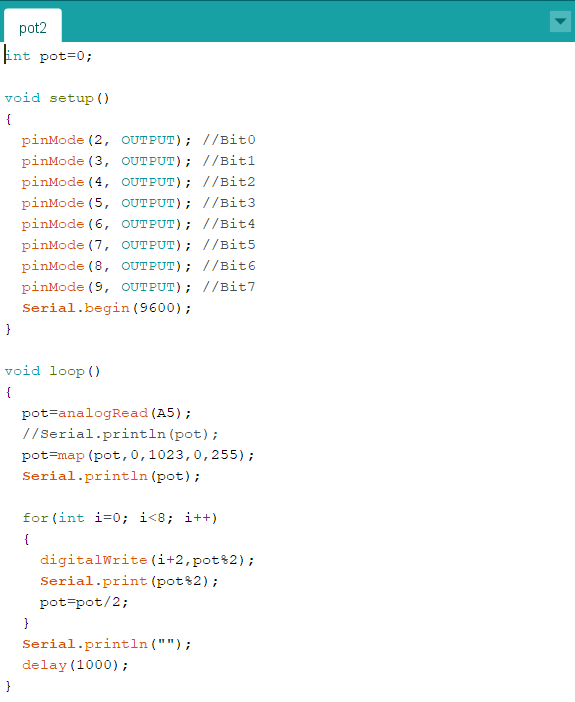
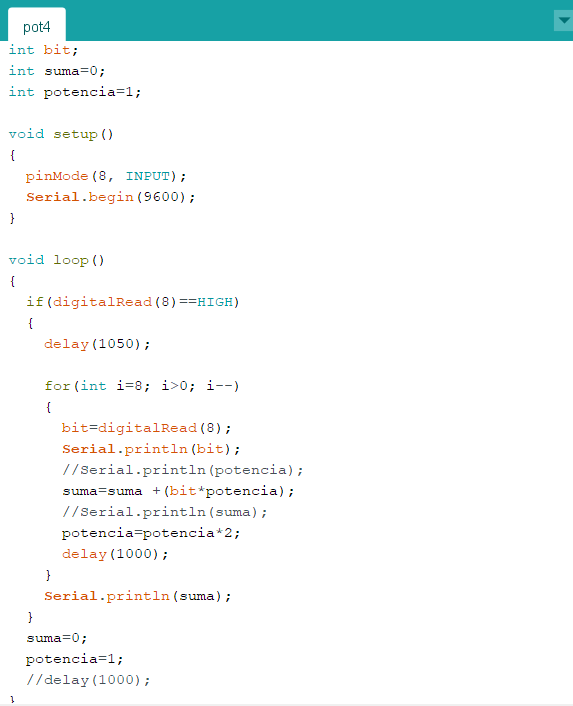
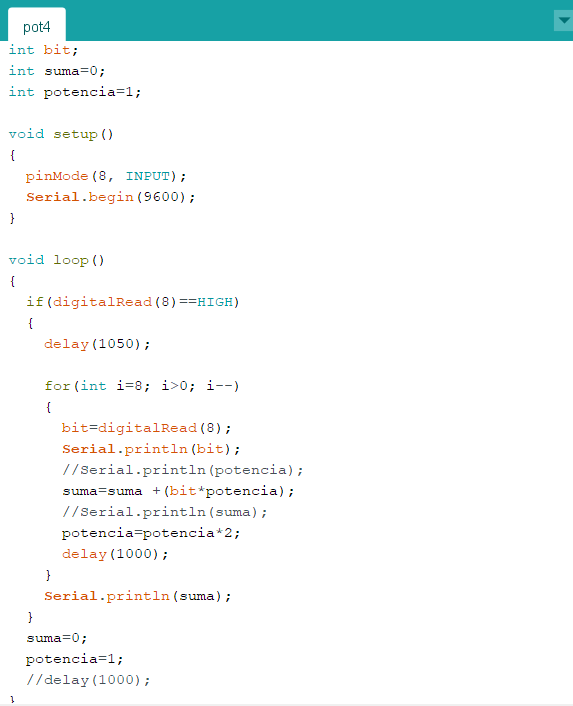

Desarrollar un programa que comunique 2 placas arduino, la primera manda pulsos a traves de un led y la segunda los cuenta.


Desarrollar un programa que comunique 2 placas arduino, la primera manda pulsos a traves de un led y la segunda los cuenta.
Desarrollar un programa que comunique 2 placas arduino, la primera manda pulsos a traves de un led y la segunda cuenta la duracion.


Diseñar un sistema que permita convertir el valor analógico de un potenciómetro en un arreglo de variables que representen el numero en binario de 8 bits.
 

Diseñar una función que permita convertir el valor en binario obtenido de 8 puertos digitales del Arduino en un valor entero en sistema decimal y mostrarlos en el monitor serial.
 
